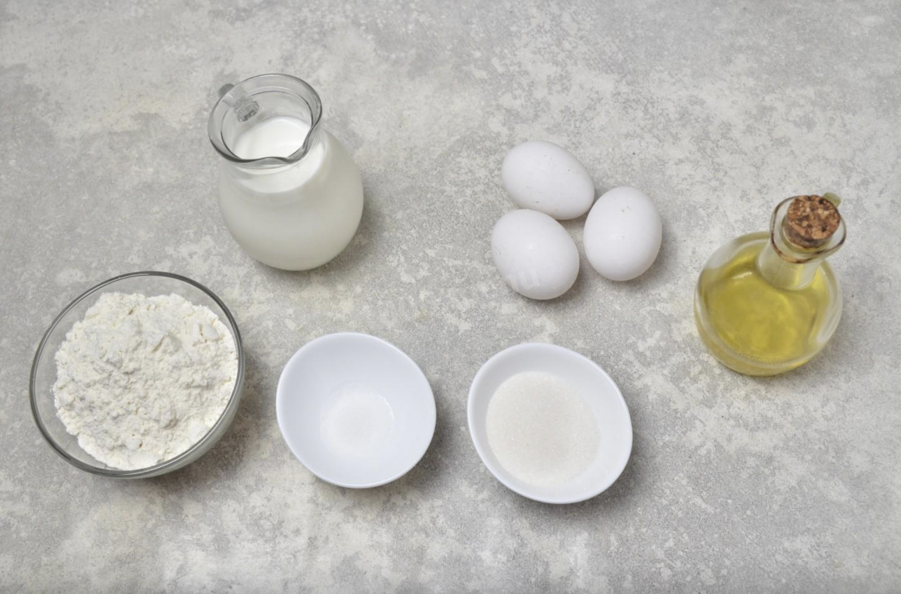
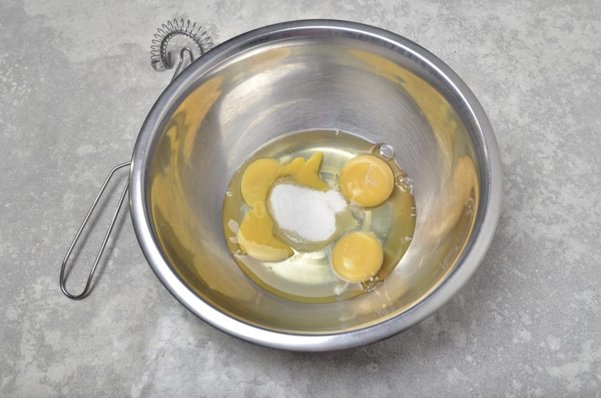
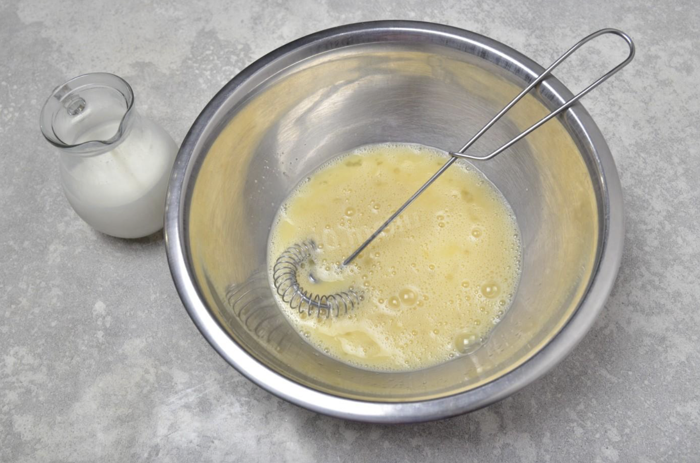
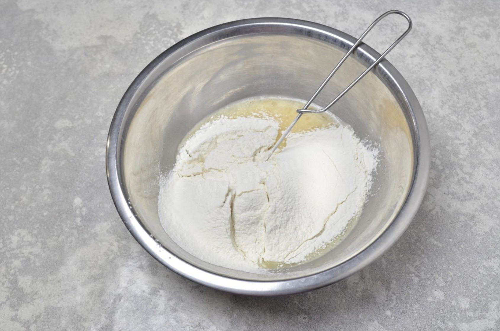
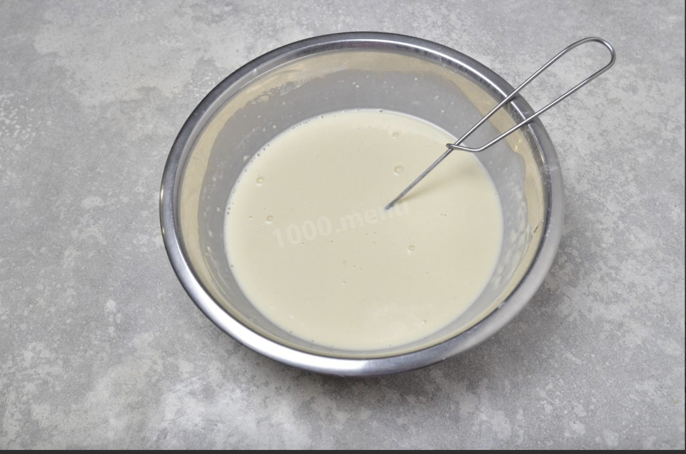
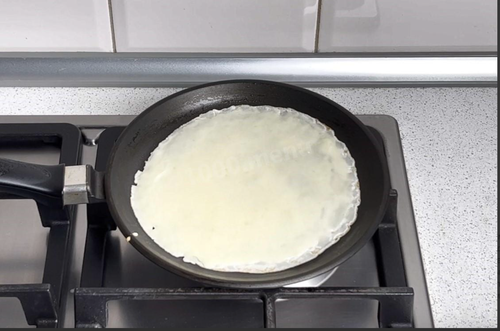
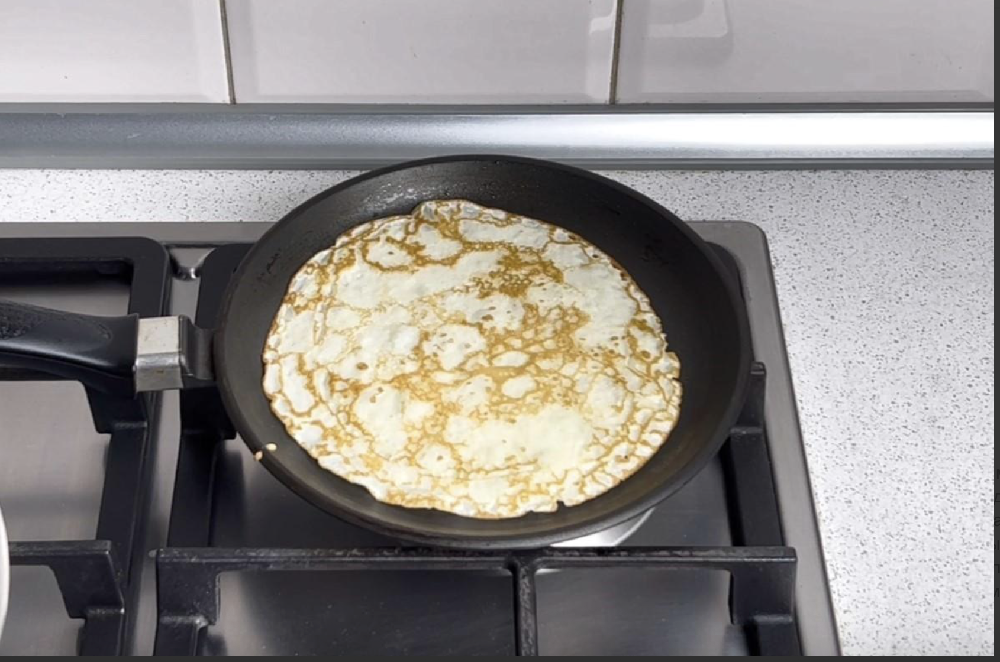
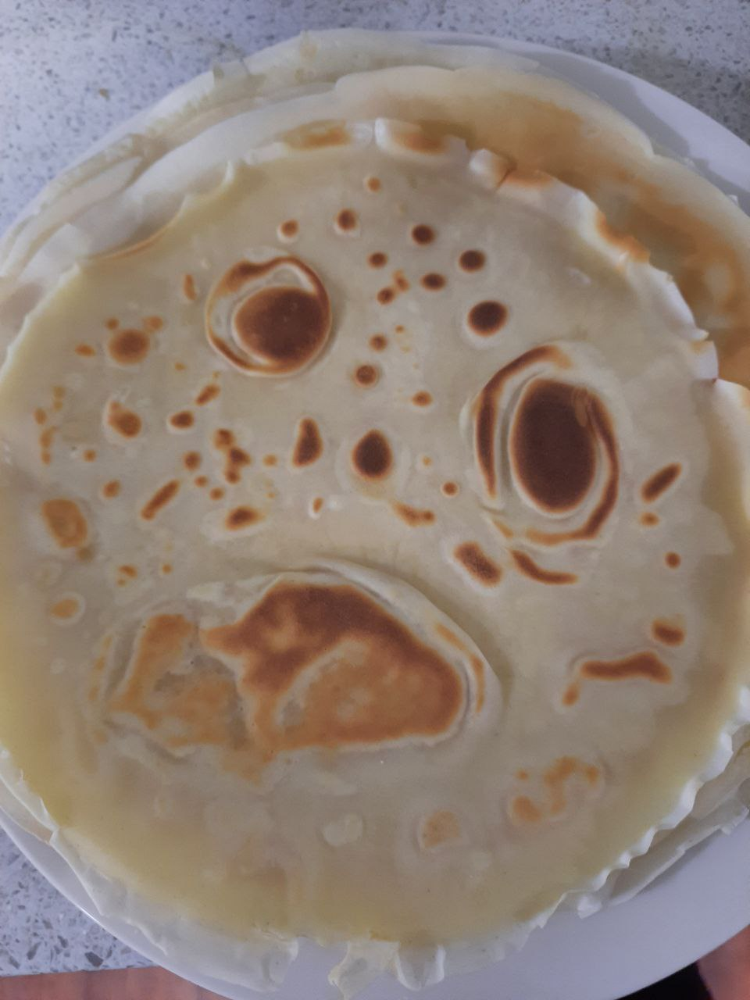

| # | Ingredient name | Amount |
|---|---|---|
| 1 | Milk | 700ml |
| 2 | Eggs | 3 |
| 3 | Oil | 2 table spooond |
| 4 | Flour | 300g |
| 5 | Sugar | 3 table spoons |
| 6 | Sault | a picnch |
Prepare the ingredients. It is better for them to be room temperature. If not, use oven to hit the milk a little.
Break eggs into pan, add sugar and salt
Beat the eggs with a whisk/fork/mixer. Pour milk into this bowl and mix it.
Sift flour into a bowl to avoid lumps
Mix it well untill all lumps will go off. Add oil and mix again.
Hit the pan. It should be very hot. grease the pan with oil. Pour some liquid from the last steps into the pan. spread over the pan in a circular motion.
Fry untill golden brown, then turn it over on the other. The bubbles will tell, when to turn it over. Remove the finished pancake on a plate and repeat from step 6 for others.
Serve it with sour cream, jam or honey. Sometimes they can look funny like this:
